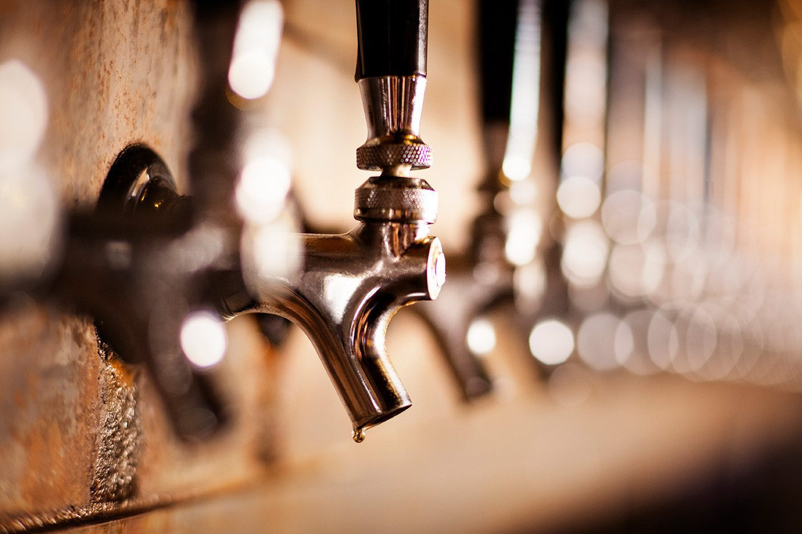

Limpieza de líneas
Eliminamos residuos y mantenemos tus líneas listas para servir una cerveza con mejor sabor.
Más información →Servicio profesional para Tenerife Sur
Expertos en instalaciones de cerveza para bares, restaurantes, hoteles, beach clubs y eventos. Más sabor, más higiene y más rentabilidad para tu negocio.
Nos ocupamos de la limpieza de líneas, mantenimiento completo, reparación de grifos e instalación de sistemas de cerveza.
Una instalación sucia se nota rápido: la cerveza pierde frescura, la espuma cambia y el servicio detrás de la barra se vuelve más lento. Por eso revisamos las líneas, los grifos, las conexiones visibles, la presión y el CO₂ con una rutina clara, sin complicar el trabajo del local.

Trabajamos para bares, restaurantes, hoteles, beach clubs, cafeterías, terrazas y eventos en Tenerife Sur. Cada instalación tiene su ritmo: un bar pequeño no necesita el mismo seguimiento que un hotel con varios puntos de servicio, y un evento necesita una revisión rápida antes de abrir al público.
En una visita normal limpiamos las líneas de cerveza, revisamos los grifos y comprobamos si hay fugas, pérdidas de presión o conexiones flojas. Si el local ya tiene una rutina de mantenimiento, podemos seguirla y dejar la instalación lista para el siguiente servicio. Si no la tiene, proponemos una frecuencia simple según el uso real de la barra.
También atendemos averías y ajustes cuando una línea no tira bien, hay demasiada espuma, la cerveza sale lenta o el sistema pierde presión. En esos casos miramos primero lo básico: barril, gas, regulador, conexiones y grifo. Muchas incidencias salen de ahí, y conviene revisarlas antes de cambiar piezas.
La zona principal de trabajo es Tenerife Sur: Adeje, Costa Adeje, Playa de las Américas, Los Cristianos, San Miguel de Abona y Las Chafiras. Para otros puntos de la isla, se puede consultar disponibilidad antes de planificar la visita.
Eliminamos residuos y mantenemos tus líneas listas para servir una cerveza con mejor sabor.
Más información →Revisión de presión, CO₂, conexiones, fugas, grifos y componentes visibles.
Más información →Solucionamos averías e instalamos nuevas griferías e instalaciones completas.
Más información →Servicio en Adeje, Costa Adeje, Playa de las Américas, Los Cristianos, San Miguel de Abona y Las Chafiras. Otras zonas de Tenerife: consultar.
Contactar ahoraTarifas para Tenerife Sur, con precios sin IGIC y con 7% IGIC.
| Líneas | Sin IGIC | Con 7% |
|---|---|---|
| 1–2 | €45 | €48,15 |
| 3–4 | €60 | €64,20 |
| 5–6 | €75 | €80,25 |
| 7–10 | €95 | €101,65 |
| 10+ | A consultar | |
| Líneas | Sin IGIC | Con 7% |
|---|---|---|
| 1–2 | €55 | €58,85 |
| 3–4 | €70 | €74,90 |
| 5–6 | €90 | €96,30 |
| 7–10 | €115 | €123,05 |
| 10+ | A consultar | |
2 visitas al mes desde €110/mes para instalaciones de hasta 4 líneas.
Precios especiales para hoteles y grandes instalaciones.
Todas las tarifas →Páginas locales para cada zone de servicio: